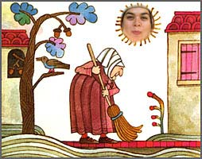

گويم. نمي فهمد كه تيتا و ماما النا را دو قطب متضاد هم ديدن اشتباه است. او بايد رابطه اين دو تا را بفهمد تا رشد كند. اما حتي نمي فهمد كه اصرارش براي پژوهشگر ماندن به هر قيمتي، استعداد داستان هاي غريب و در عين حال متقاعد كننده گفتن را از او مي گيرد.
من. طوري حرف مي زني كه ياد فال گرفتن با ايچينگ مي افتم. "او بايد بفهمد كه..." و باقي قضايا. چه اشكالي دارد كه نانسي هماني باشد كه هست؟
ت. اشكالي ندارد، اما خودش اصرار دارد كه پژوهشي بكند كه مثل داستان من "پر از بي ثباتي و خطر" باشد. اشكال اين است كه او جرات پژوهشگر/داستان سرا بودن را ندارد، اما آرزوي اش را دارد.
من. بدون اين كه حاضر باشد خطرش را بپذيرد.
ت . خب، حالا وقتش است كه يك بيانيه صدر كنم، تو هم ديگر نگو كه انگار فال ايچينگ مي گيرم، اين در واقع يك بيانيه... پروين چه گفت؟ گفت بيانيه اي به سبك مري وولستن كرافت؟ در هر حال بيانيه است نه فال. تا وقتي كه نانسي از زاويه بلند پروازي هاي شخصي اش به كارش نگاه مي كند خطراتش را حاضر نيست بپذيرد. اما اگر بداند كه همان بلندپروازي هايي را كه براي خودش دارد براي بقيه زن ها هم دارد، اگر بداند كه آن چه واقعا در جستجويش است حقوق و فرصت هاي مساوي رشد براي همه جلوه هاي حيات روي كره زمين است آن وقت مي فهمد كه چرا گاهي مجبور است قواعد را بشكند، ماما النا را ساكت كند، و كم تر نگران انتخاب روش تكنيك پژوهش و بيشتر نگران انتخاب مبناهاي شناخت شناسي و سبك هاي متفاوت پژوهش فمينيستي باشد. چون، اگر اين كار را نكند قدرتي نيست، شكفتگي روح زنانه نيست، صدايي نيست، چند صدايي نيست، و داستاني را كه قواعد جلوي نفس كشيدنش را گرفته اند نمي تواني با قدرت داستاني كه بادبان برافراشته پيش مي رود مقايسه كني.
من. آفرين تيتا! براوو! اين حرفهات خيلي به درد ما مي خورد. به درد ما كه داريم سعي مي كنيم روز زن را جشن بگيريم و به آرزوهاي جمعي مان جامه عمل بپوشانيم.
ت. فعلا مي توانيم يك ميتينگ دو نفري راه بيندازيم! من سخنراني كنم و تو هورا بكشي.
